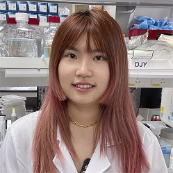

Members
Chan Yun Shen Winston
曾永昇
Principal investigator, Ph.D.
Winston graduated from the National University of Singapore and did his research training in the laboratory of renowned stem cell scientist Prof Ng Huck Hui, in the Genome Institute of Singapore (GIS). After graduation, he continued working as a postdoc and an innovation fellow in GIS looking into translating research outcomes. He is also an awardee of the Gilead Sciences Research Scholars in Liver Disease Asia 2019. Winston believes that science is a team sport and invites like minded individual to join the team!
Jiayi
 郑嘉怡
郑嘉怡
Research Assistant/Lab Manager, BMLSc
Jiayi has a Bachelor in Medical Laboratory Science at Queensland University of Technology. She has applied her skills during internships in clinical pathology and hospital. In Sep 2020, she joined Winston’s lab to study and practice basic biology experimental skills as a research assistant, and is taking care of the administrative work for the lab at the same time.
Freda Yue Liu
刘悦
Research assistant, MNSc
Freda graduated from University of Melbourne majoring Pharmacology and Nursing Science. Received her research training at Royal Melbourne hospital in Australia. She joined Winston’s lab at the July of 2020 and worked as a research assistant. She is enthusiastic about cell biology, signaling pathway and therapeutic application of small molecules.
Shuotong
石铄铜
Research assistant, MBME
Shuotong earned her master of engineering science in Biomedical Engineering at the University of New South Wales (Sydney, Australia) in Jan 2020. At UNSW, she showed great interest in cellular and tissue engineering, and gained some experience on cell culturing. Shuotong joined the Winston’s Lab as a Research Assistant in Nov 2020 to build more cell biology knowledge.
Leonard Hao
 郝嘉杰
郝嘉杰
Research assistant, BS
Jiajie holds a BS in Biological Engineering from Tai Yuan university of Technology(Shan xi, China). As an undergrad, he participated in researches on gene expression analysis using data mining approaches. After graduation, he practiced basic molecular biology experiment skills as a research assistant. In Oct 2020, he joined Winston's lab to study genetic control of stem cell fate. He is also interested in exploring the mechanism of single cell multi-omics change in cell state transition.